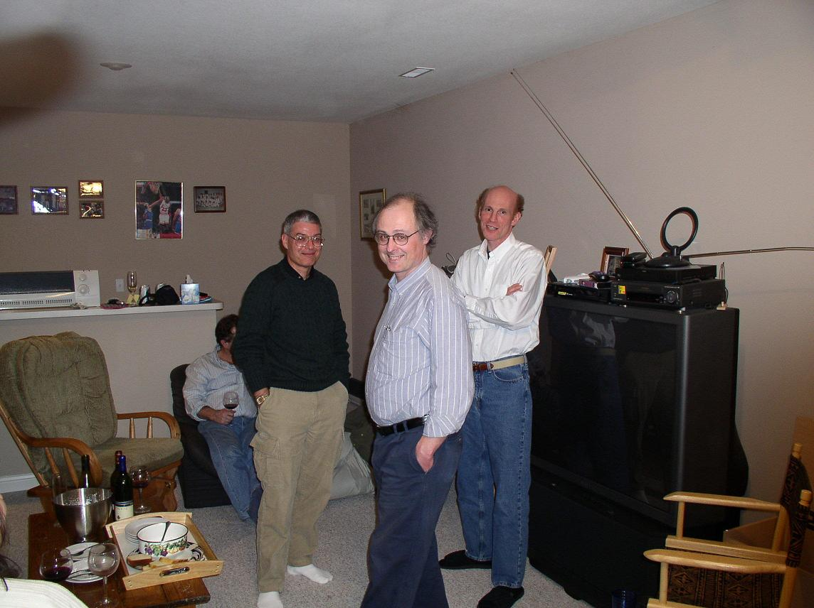

International
conference on topics in microlocal analysis, harmonic
analysis, and inverse problems

August 15-17, 2022
This conference is dedicated to celebrating the work of Allan
Greenleaf who has made important contributions micro-local analysis,
harmonic analysis, inverse problems and other areas of mathematics.
List of speakers:
Matthew Blair (University of New Mexico)
Suresh Eswarathasan (Dalhousie University) (posted zoom talk)
Raluca Felea (Rochester Institute of Technology)
Michael Greenblatt (University of Illinois-Chicago)
Philip Gressman (University of Pennsylvania)
Eric Grinberg (University of Massachusetts Boston),
Matti Lassas (University of Helsinki)
Bochen Liu (National Taiwan University) (posted zoom talk)
Adrian Nachman (University of Toronto)
Cliff Nolan (University of Limerick)
Eyvindur Palsson (Virginia Tech)
Duong Phong (Columbia University)
Christopher Sogge (Johns Hopkins University)
Betsy Stovall (University of Wisconsin-Madison)
Brian Street (University of Wisconsin-Madison)
Krystal Taylor (Ohio State University) (posted zoom talk)
Gunther Uhlmann (University of Washington)
Yakun Xi (University of Rochester) (posted zoom talk)
Ting Zhou (Northeastern University) (posted zoom talk)
Organizers:
Raluca Felea (Rochester Institute of Technology)
Alex Iosevich (University of Rochester)
Malabika Pramanik (University of British Columbia)
Andreas Seeger (University of Wisconsin)